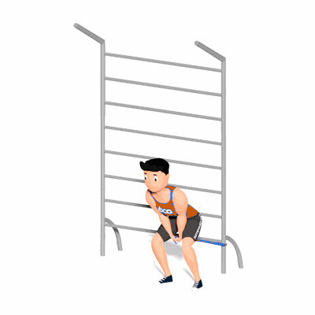

Pull-Through com Faixa Elástica

O exercício tem como objetivo o fortalecimento dos músculos do glúteo e posteriores da coxa.
Ficha Técnica
Tipo: Funcional
Grupo Muscular: Glúteo
Aparelho: Nenhum
Músculos: Nenhum
Como realizar
- Prenda uma faixa de resistência ao redor de um objeto robusto perto do chão;
- Com as costas voltadas para o ponto de ancoragem e a faixa entre os pés, agarre as extremidades livres da faixa com ambas as mãos e avance até que haja tensão na faixa;
- Fique em pé com os pés entre os quadris e a largura dos ombros e as mãos, cada uma segurando uma extremidade da faixa, juntas na parte inferior da pélvis;
- A partir daqui, empurre os quadris para trás e permita uma ligeira flexão dos joelhos até que o tronco fique um pouco acima do paralelo com o chão;
- Pause, pressione os calcanhares e empurre os quadris para a frente para voltar a pé.
 RC STORE
RC STORE